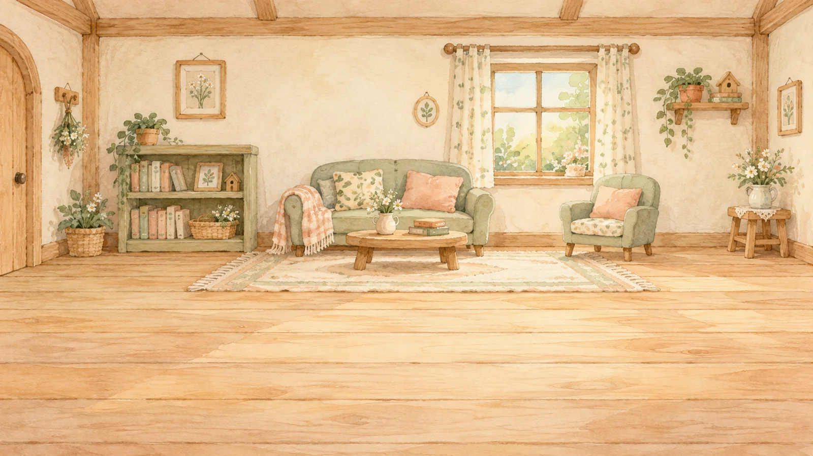
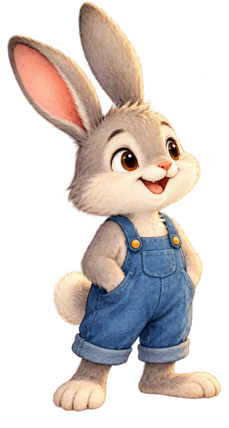
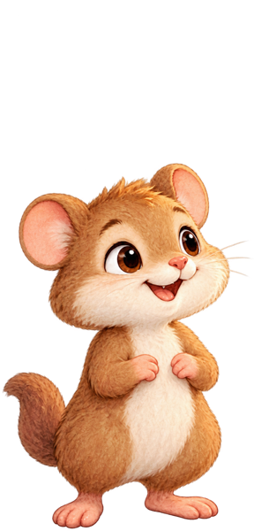

WONDER QUEST GAMESCyber Detectives
Which object comes next?
The two objects take turns.Toby
Hold an arrow to walk to an object.
✚
MOVEWalk to an object, then press Keyboard: ← → · Space to choose
CHOOSE

The cosy house of clues


Toby, Finn and Milo need a little more room to explore!
Use landscape to play